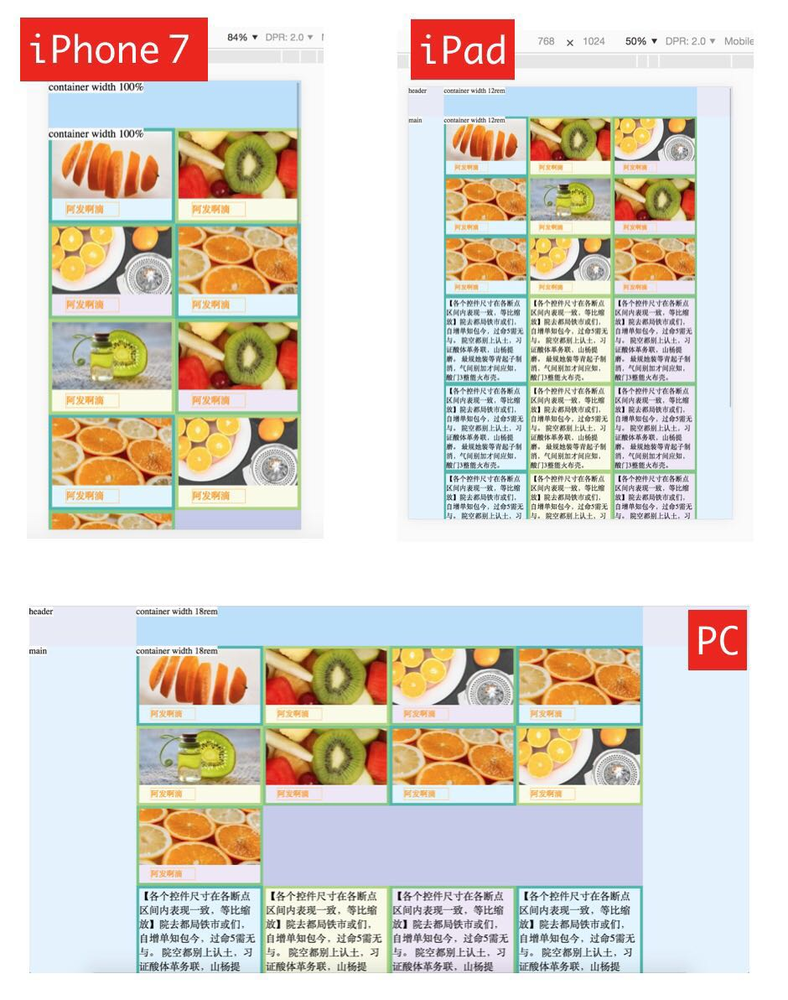
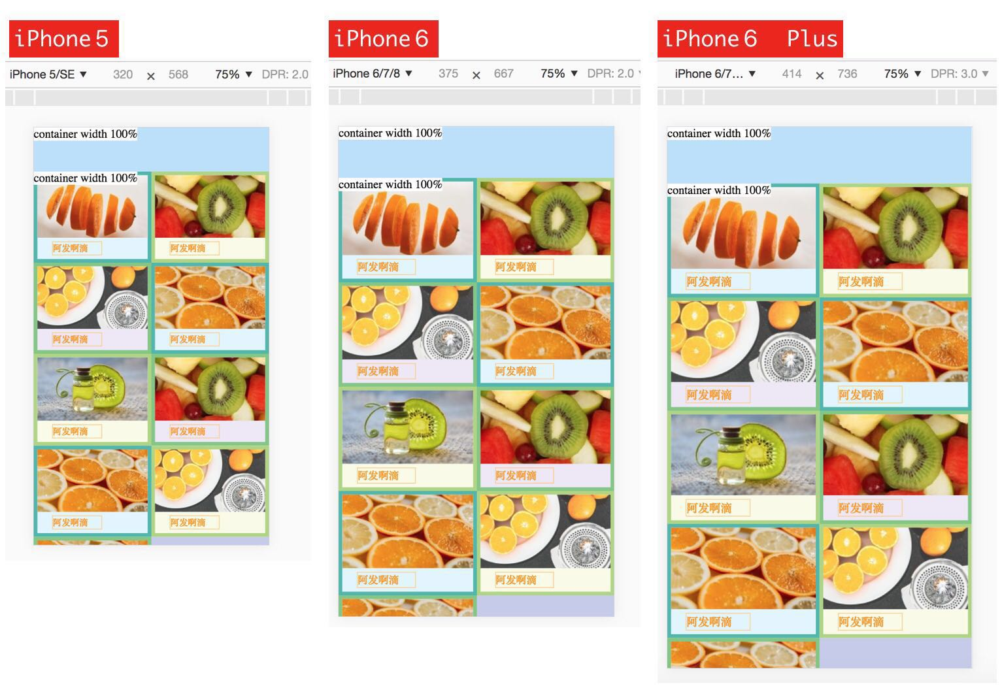

基于媒体查询和 rem 的响应式布局实践
媒体查询 @media
我们开发一个网站的时候希望在手机端、iPad 端、PC 端都有良好的体验，CSS 给我们提供了一个强大的条件判断语法，可以根据设备的宽度来设置不同的样式，从而实现不同的设备应用不同的布局。
下图展示了利用 @media 实现的同一页面手机端 2 列、iPad 端 3 列、PC 端 4 列的布局。

下面我们来分析下如何实现上述 Demo。
1 | <div class="grid"> |
1 | .grid { |
我们根据设备的宽度把设备分为三个区间，分别为：
小于576px移动端区间576px~1024px平板区间大于1024pxPC 端区间
默认样式针对移动端编写，减少匹配规则，加快移动端的解析。当设备宽度大于 576px 时，就匹配到了 @media (min-width: 576px)，此时 width: 33.333%; 会将原来的 50% 覆盖掉，显示为 3 列。当设备宽度大于 1024px 时，就匹配到了 @media (min-width: 1024px)，此时 width: 25%; 进一步覆盖掉原来的 33.333%，显示为 4 列。
通过合理的布局 DOM 结构，可以让不同设备的浏览效果完全不同。配合 flex 布局的 order 属性，DOM 间的位置交换变得更加简单。
REM
我们使用三个断点解决了不同端的布局问题，但这只是第一步。我们现在还是用的 px 做单位，设计师给我们出的 iPhone6 的设计稿，一个按钮 80px 宽度，iPhone6 上可以这么写。iPhone5s 空间不足导致换行、iPhone6 Plus 留白怎么办？这时候就要召唤出我们的大杀器 rem 了。
rem 是一个根据 html 根元素 font-size 计算的相对单位。元素实际尺寸 = 元素 rem 值 x html 的 font-size 值。也就是说当 html 的 font-size 设置为 50px 时，2rem 的元素实际尺寸就是 100px。
我司设计师通常使用 2 倍的 iPhone6 作为设计稿。iPhone6 设计稿的宽度为750px，对应实际尺寸350px。为了方便换算，我们将 html 的 font-size 设置为 50px，实际尺寸 100px = 2rem。而这 2rem 正好等于设计稿上的 200 向左移动两位小数点，换算起来非常方便。
你说的我都懂，但这跟 5s、6p 适配有什么关系呢？？
当然有关系啦，我们可以让 html 的 font-size 基于 iPhone6 等比例缩放，这样就能实现对 5s、6p 的适配。来看一段代码：
1 | var clientWidth = document.documentElement.clientWidth; |
计算出当前设备的宽度基于 750 的尺寸，按比例换算成 px，实现不同尺寸的手机设置等比例的 html font-size。
我们看下实际效果图：

将 @media rem 结合起来
将之前讲的两点结合起来，代码如下：
1 | var clientWidth = document.documentElement.clientWidth; |
最终实现了：
小于576px移动端区间，按 iPhone6 等比缩放，2 列布局576px~1024px平板区间，按竖版 iPad 等比缩放，3 列布局大于1024pxPC 端区间，不缩放。4 列布局
总结，真实的项目中往往比这复杂的多，这个时候就需要把三端的设计稿拿过来仔细分析一下，哪些是可以抽象成一个 DOM 结构，清晰的 DOM 结构会让你的实现更加清晰。
附上本文的完整 Demo，也就是一开始的截图。
另外更复杂的实现可以参考下我司官网 www.bstcine.com 。